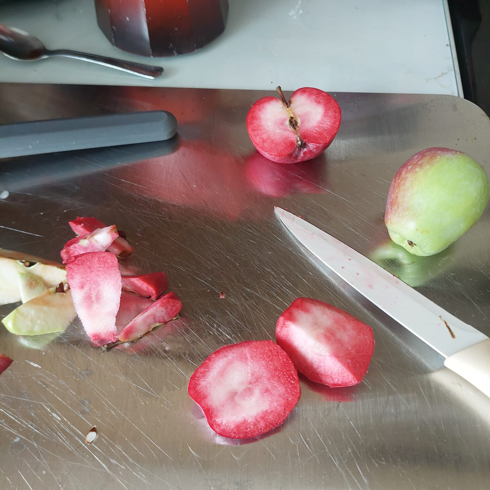
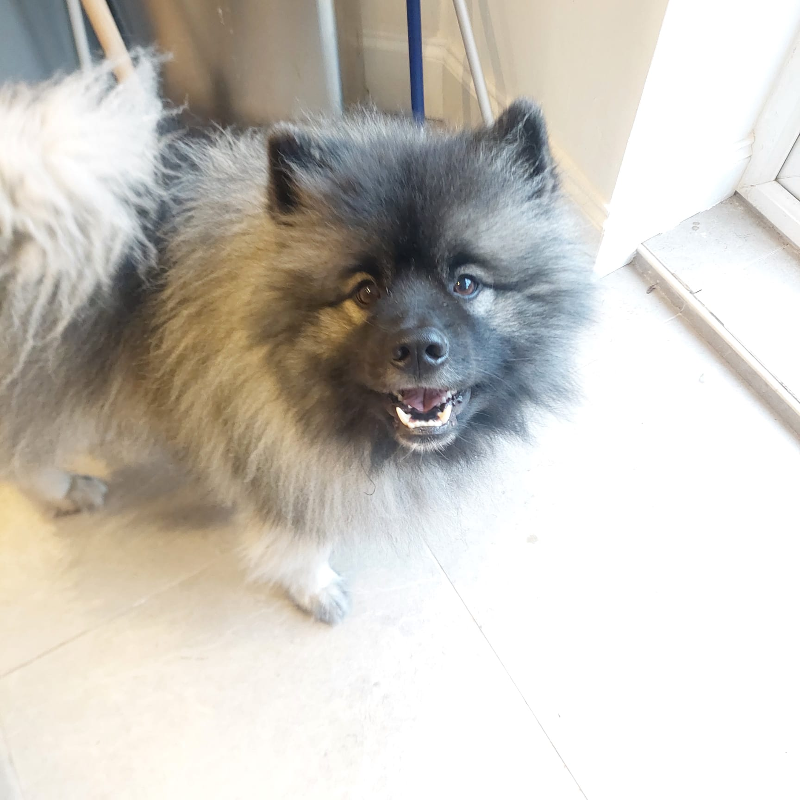
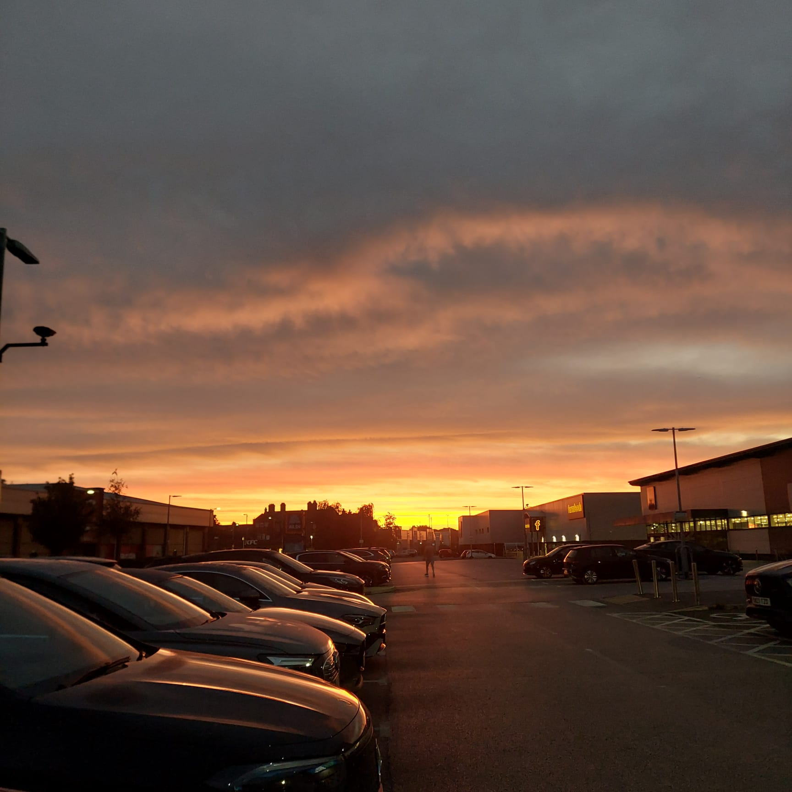
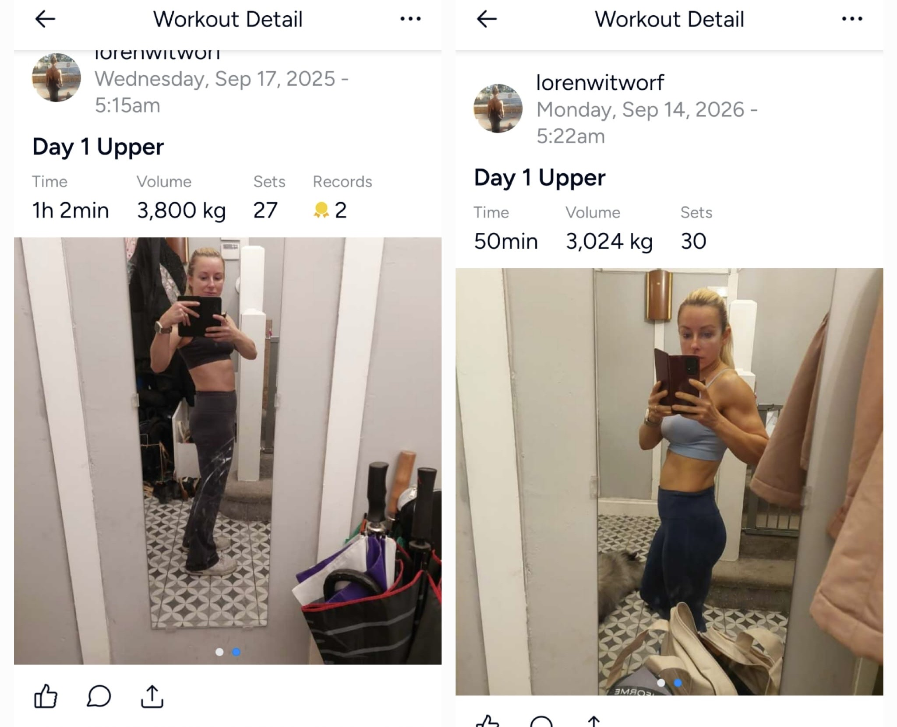
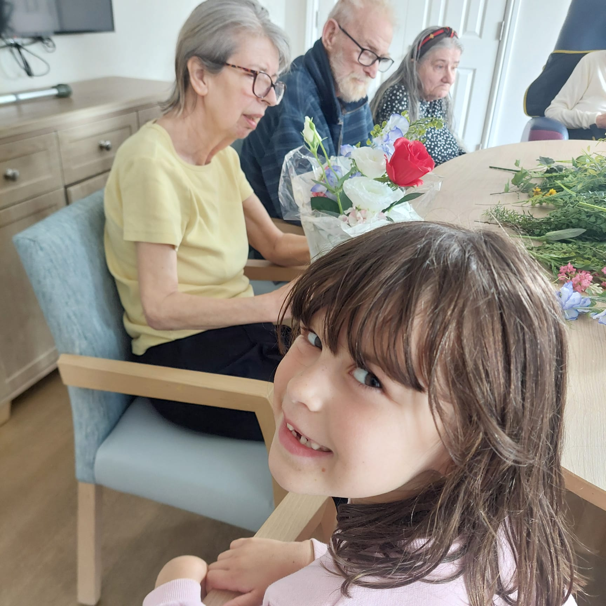
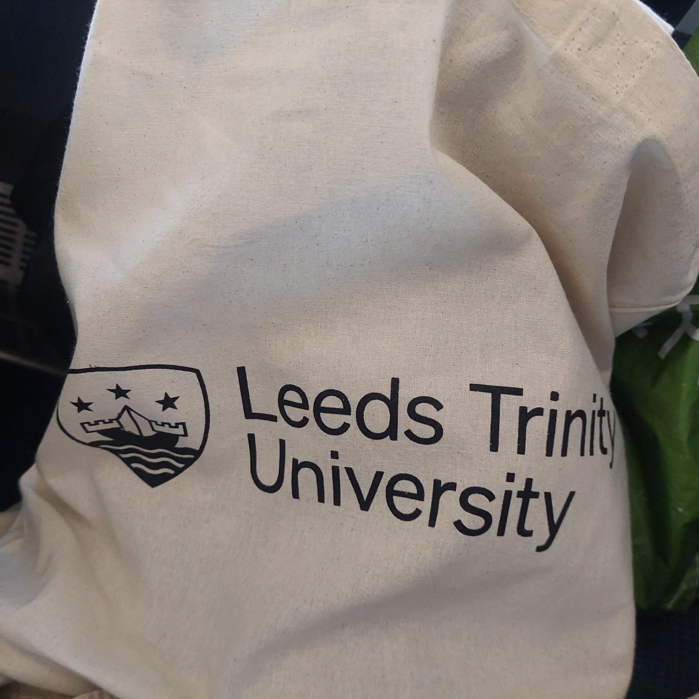

The unexpected inside the ordinary.

The ones who stay close.

The pleasure of being together.
You seem to have a habit of noticing things and then making something of them. A “Normie” sign that makes you laugh. A phrase like “planned fatigue” that sparks an idea. An ordinary moment that suddenly connects to something bigger.
There is something playful in that — but also thoughtful. You don’t just notice things. You wonder where they might lead.
A lot of September’s moments were about people. Enjoying being together in person. A five-year-old’s instinctive generosity. A thoughtful book from a colleague. And the simple act of helping someone feel seen.
Different moments, but perhaps they share something: the value you place on making people feel connected, remembered and cared for.
There is power in your physical progress — in seeing the difference and recognising that you’ve worked for it. But perhaps the bigger thread is being willing to acknowledge progress at all.
The paddle board. The strength. The compliment you chose to take as a compliment. Not everything has to be a milestone. Sometimes noticing that you’re doing well is enough.

Something to be proud of.

A five-year-old's generosity.

Helping others feel seen.